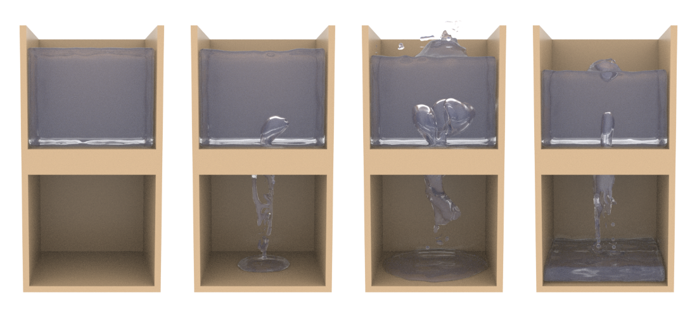

Research
This page contains published research, video demonstrations and links to any published code.
Using The Polynomial Particle-In-Cell Method For Liquid-Fabric Interaction

The work was accepted as a short paper for GRAPP 2024, and was presented by myself.
Abstract
Authors: Robert Dennison, Steve Maddock
Liquid-fabric interaction simulations using particle-in-cell (PIC) based models have been used to simulate a wide variety of phenomena and yield impressive visual results.
However, these models suffer from numerical damping due to the data interpolation between the particles and grid.
Our paper addresses this by using the polynomial PIC (PolyPIC) model instead of the affine PIC (APIC) model that is used in current state-of-the-art wet cloth models.
The affine transfers of the APIC model are replaced by the higher order polynomials of PolyPIC, thus reducing numerical dissipation and improving resolution of vorticial details.
This improved energy preservation enables more dynamic simulations to be generated although this is at an increased computational cost.
The published paper can be found here.
The code repository for this work can be found here.
Demonstration Videos
A rendered view of a ball of fluid falling onto yarn-based fabric. Rendered using Houndini.
Comparisons of simulations using APIC and PolyPIC.
Video Games
After graduating I spent 2 years working for Sumo Warrington and was able to work on some really exciting projects!
Mortal Kombat 1

Released on 19th Sep 2023 on various platforms: Windows, PlayStation 5, Xbox Series X/S, Nintendo Switch.
Football Manager 2021

Released between 24th Nov 2020 - 15th Dec 2020 on various platforms: Windows, macOS, iOS, Android, Xbox One, Xbox Series X/S, Nintendo Switch.
Blog
This page contains other projects that aren't published research.
Multiphase PIC Fluids
A multiphase fluid simulation using the affine particle-in-cell method (APIC), based on the MultiFLIP paper by Boyd and Bridson (link to paper here).
PIC Fluids
Fluid simulation using the particle in cell method. Implemented in C++ on the CPU, making use of oneTBB for multithreading.